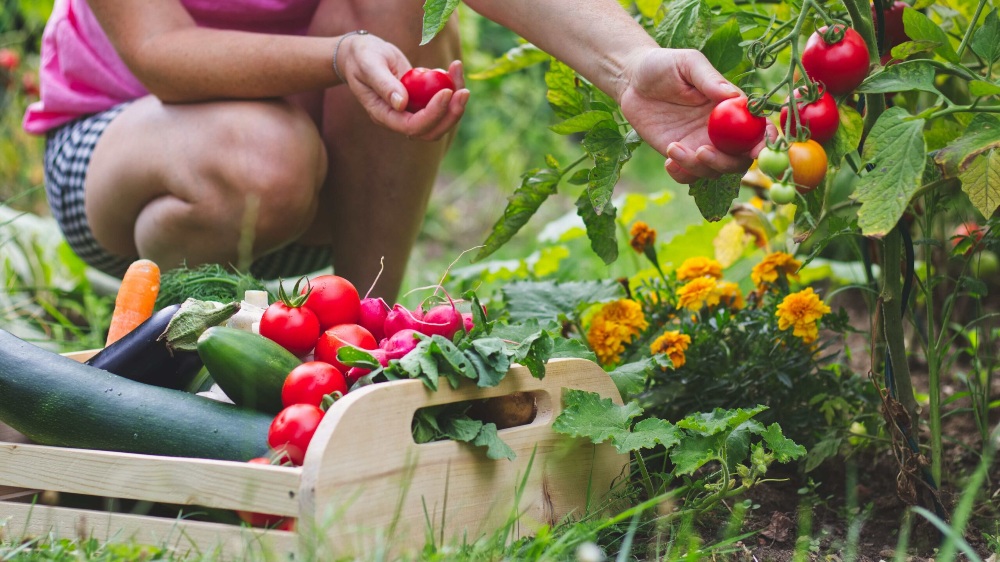

Vida comunitaria
Jornada de huerto comunitario
Publicado el

La jornada reúne a vecinas y vecinos para preparar la tierra, sembrar hierbas de estación y compartir técnicas de cultivo sustentable.
No se necesita experiencia previa: cada participante recibe herramientas y acompañamiento durante toda la actividad.
Información de la actividad
- Fecha: sábado 29 de agosto.
- Duración: 2 horas.
- Requisito: ropa cómoda y ganas de ensuciarse las manos.